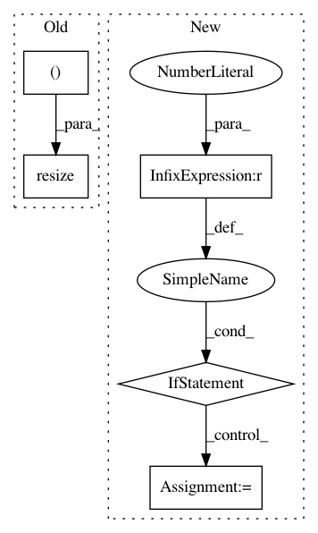

09b2b1a7cab804077ad3bdaee2d86e6994ec8126,cellprofiler/modules/watershed.py,Watershed,run,#Watershed#Any#,107
Before Change
original_shape = x_data.shape
if x.volumetric:
x_data = skimage.transform.resize(x_data, (original_shape[0], 256, 256), order=0, mode="edge")
distance = scipy.ndimage.distance_transform_edt(x_data)
distance = mahotas.stretch(distance)
After Change
factor = self.downsample.value
if factor > 1:
if x.volumetric:
factors = (1, factor, factor)
else:
factors = (factor, factor)
x_data = skimage.transform.downscale_local_mean(
x_data,
factors
)
threshold = skimage.filters.threshold_otsu(x_data)
x_data = x_data > threshold
In pattern: SUPERPATTERN
Frequency: 3
Non-data size: 5
Instances
Project Name: CellProfiler/CellProfiler
Commit Name: 09b2b1a7cab804077ad3bdaee2d86e6994ec8126
Time: 2017-09-02
Author: allen.goodman@icloud.com
File Name: cellprofiler/modules/watershed.py
Class Name: Watershed
Method Name: run
Project Name: baldassarreFe/deep-koalarization
Commit Name: 3a25edce742db97d936ffb645185b520878d0c6d
Time: 2017-05-06
Author: baldassarre.fe@gmail.com
File Name: dataset/resize.py
Class Name: ImagenetResizer
Method Name: resize_img
Project Name: streamlit/streamlit
Commit Name: dfe171249a251094498f4f17902f2486eb2fa941
Time: 2019-08-28
Author: arraydude@gmail.com
File Name: lib/streamlit/elements/image_proto.py
Class Name:
Method Name: _bytes_to_b64